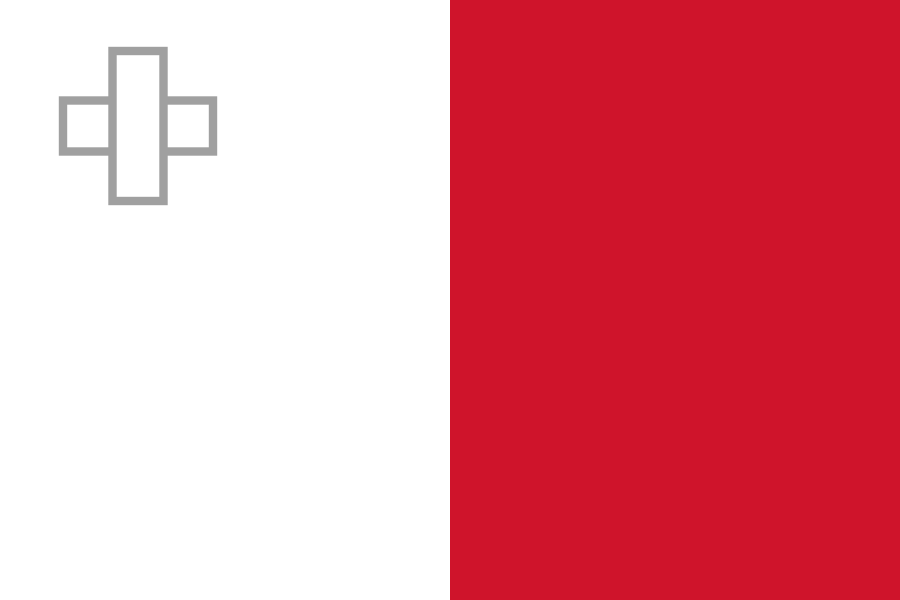

Länderakte Malta
Selbstschließung nach Drohungen – keine staatliche Anordnung
Malta hat ein seit 1990 bestehendes offizielles russisches Kulturzentrum in Valletta. Es schloss ab dem 3. März 2022 vorübergehend für die Öffentlichkeit – nachdem es Drohungen erhalten hatte und die Polizei eingeschaltet worden war. Für eine staatliche Schließungsanordnung gibt es keinen Beleg. Spätere Veranstaltungen belegen Wiedereröffnung und laufenden Präsenzbetrieb.
Aktiver offizieller Standort
2022 zeitweise geschlossen
Kurzbefund
| Einrichtung |
Russian Cultural Centre / Russisches Haus Valletta |
| Ort |
36 Merchants Street, Valletta; mit „Tchaikovsky Hall“ |
| Eröffnung |
8. November 1990 |
| Rechtsspur 1987 |
Notenwechsel vom 5. und 18. März 1987 über die Eröffnung eines sowjetischen Kulturzentrums; in einem 1993 gebilligten Inventarisierungsprotokoll-Entwurf als fortgeltend aufgeführt |
| Rechtsspur 1994 |
Ein gebilligter Vertragsentwurf bezeichnet das Zentrum in Artikel 14 als nicht gewinnorientierte Organisation unter Leitung der russischen Botschaft und stellt ein gesondertes Abkommen in Aussicht |
| Rechtsspur 1996 |
Russischer Regierungsbeschluss Nr. 1490 vom 14. Dezember 1996 zum Abschluss eines Abkommens über die Tätigkeit des Zentrums |
| Beleglage |
Entwürfe, kein Endvertrag. Die Texte von 1993 und 1994 sind nur genehmigte Entwürfe beziehungsweise Sekundärreproduktionen amtlicher Beschlüsse. Die später unterzeichneten authentischen Texte samt Inkrafttreten wurden nicht gefunden – Rechtspersönlichkeit, Diplomatenstatus, Eigentum, Steuern und Immunität bleiben offen |
| Schließung 2022 |
Ab 3. März 2022 vorübergehende Eigen- beziehungsweise Schutzschließung nach Drohungen und polizeilicher Intervention. Keine staatliche Schließungsanordnung belegt |
| Diplomatie |
Malta setzte die EU-Sanktionen um, wies aber keine russischen Diplomaten aus, und verwies auf die sehr kleine maltesische Mission in Moskau |
| Status Mai 2026 |
Konzert des Kinderchors und weitere Veranstaltungen im Haus belegen Präsenzbetrieb |
Eigenschließung ist keine staatliche Beendigung
Der maltesische Fall wird leicht falsch eingeordnet. Das Zentrum schloss im März 2022 selbst und vorübergehend, nachdem es Drohungen und nach Medienberichten „very violent messages“ erhalten hatte. Der Außenminister traf die Direktorin und rief zu sozialem Frieden auf. Eine staatliche Suspendierung oder Beendigung ist damit gerade nicht belegt. Das genaue Datum des Wiederbeginns wurde nicht gefunden. Leseregel: „Offen“ bedeutet, dass eine Aussage in den geprüften öffentlichen Quellen nicht belegt ist. Das ist kein Beweis des Gegenteils. EU-Listung, nationaler Vollzug, politische Nichtkooperation, Vertragskündigung und tatsächliche Betriebsschließung werden getrennt bewertet.
Chronologie
5. und 18. März 1987
Notenwechsel über die Eröffnung eines sowjetischen Kulturzentrums in Malta. Er wird in einem 1993 von der russischen Regierung gebilligten Inventarisierungsprotokoll-Entwurf als fortgeltend aufgeführt. Ob und wann dieses Protokoll selbst unterzeichnet wurde, blieb offen.
8. November 1990
Tatsächliche Eröffnung des Russian Cultural Centre in Valletta.
9. September 1993
Die russische Regierung billigt den Entwurf eines Vertragsinventarisierungsprotokolls, das das Kulturabkommen von 1982 und den Notenwechsel von 1987 in der Fortgeltungsliste nennt. Die Vertragsfortgeltung ist damit nur Entwurfsinhalt.
19. Juni 1994
Die russische Regierung billigt den Entwurf eines allgemeinen Kulturabkommens. Dessen Artikel 14 sieht das Zentrum als nicht gewinnorientierte Organisation unter Botschaftsleitung und eine mögliche gesonderte Vereinbarung vor. Unterzeichnung und Inkrafttreten sind nicht verifiziert.
14. Dezember 1996
Die russische Regierung erlässt Beschluss Nr. 1490 zum Abschluss eines Regierungsabkommens mit Malta über die Tätigkeit des Zentrums.
24. Februar 2022
Außenminister Evarist Bartolo verurteilt im staatlichen Rundfunk die Logik des Rechts des Stärkeren und bekräftigt Souveränität und Neutralität.
3. März 2022
Das Zentrum hängt einen Hinweis auf die vorübergehende Schließung für die Öffentlichkeit aus. Vorausgegangen waren Drohungen und eine polizeiliche Intervention.
3. und 4. März 2022
Außenminister Bartolo trifft die Zentrumsdirektorin und ruft zu sozialem Frieden auf.
7. bis 18. April 2022
Malta setzt die EU-Sanktionen um, weist aber keine russischen Diplomaten aus. Die Regierung verweist auf die sehr kleine maltesische Mission in Moskau und das Risiko reziproker Handlungsunfähigkeit. Eine russische Personalaufstockung wird zunächst nicht bewilligt.
21. Juli 2022
Die EU listet Rossotrudnitschestwo.
30. November 2024
Konzert im Tchaikovsky Hall des Zentrums, 36 Merchants Street – ein Beleg für den wiederaufgenommenen Präsenzbetrieb.
21. Juni 2025
Ein vom Zentrum beworbenes russisches Klavierkonzert findet in der Malta Society of Arts statt.
7. Juli 2025
Das Sanctions Monitoring Board berichtet über strikte Sanktionsumsetzung und eingefrorene Vermögenswerte – allgemein und ohne Hausbezug.
20. und 22. Mai 2026
Russkiy Mir berichtet über ein Konzert des Kinderchors des Zentrums und nennt die Leiterin des Russian House; weitere Mai-Veranstaltungen finden im Haus statt.
Rechtsgrundlage
Die maltesische Rechtsspur beginnt früher als vielfach dargestellt – mit dem Notenwechsel vom März 1987. Sie ist jedoch überwiegend durch russische Regierungsbeschlüsse über Entwürfe dokumentiert, nicht durch unterzeichnete Endverträge.
Der Beschluss Nr. 1490 vom 14. Dezember 1996 belegt die Billigung eines Abkommens über die Tätigkeit des Zentrums. Wann dieses Abkommen unterzeichnet und in Kraft gesetzt wurde und wo der authentische Text liegt, ist offen.
Solange die authentischen Texte fehlen, bleiben Rechtspersönlichkeit, Diplomatenstatus, Eigentum, Steuern und Immunität ungeklärt. Der Entwurf von 1994 beschreibt das Zentrum als nicht gewinnorientierte Organisation unter Botschaftsleitung – auch das ist Entwurfsinhalt und kein Nachweis geltenden Rechts.
Maßnahmen seit 2022
Malta hat die EU-Sanktionen umgesetzt und dazu Leitlinien der Finanzaufsicht FIAU sowie des Sanctions Monitoring Board veröffentlicht. Ein hausbezogener Vollzugsakt – Kontensperre, Freezing Order oder Betriebsuntersagung – wurde nicht gefunden.
Anders als die meisten EU-Staaten wies Malta keine russischen Diplomaten aus. Die Regierung begründete dies mit der sehr kleinen maltesischen Mission in Moskau und dem Risiko reziproker Handlungsunfähigkeit.
Die vorübergehende Schließung des Zentrums ab dem 3. März 2022 ging nicht auf eine staatliche Anordnung zurück, sondern auf Drohungen gegen die Einrichtung. Der Außenminister suchte in derselben Woche das Gespräch mit der Direktorin.
Einordnung
Zwei Trennlinien, die Malta besonders deutlich macht
Malta zeigt zwei Trennlinien. Erstens: Eine vorübergehende, sicherheitsbedingte Eigenschließung ist keine staatliche Suspendierung. Wer beides gleichsetzt, schreibt dem maltesischen Staat eine Maßnahme zu, die er nicht getroffen hat.
Zweitens: Ein Zentrum kann trotz EU-Listung des Trägers weiterarbeiten, wenn Zahlungswege, Ausnahmen oder Botschaftsstrukturen dies zulassen. Daraus darf ohne Aktennachweis aber keine generelle Sanktionsausnahme abgeleitet werden – die Frage, wie der laufende Betrieb finanziert wird, bleibt unbeantwortet.
Für Deutschland wären der vollständige Vertrag, konkrete Kontoinhaber und behördliche Genehmigungen die Schlüsseldokumente. Im maltesischen Fall fehlen alle drei öffentlich.
Quellen
Wo sich das Einzeldokument eindeutig belegen ließ, verweist der Link unmittelbar darauf – etwa auf Gesetzblätter, Vertragsveröffentlichungen und Parlamentsdokumente. Die Ausgangsakte dokumentiert für die übrigen Belege nur Herausgeber, Titel und Datum, nicht die vollständige Dokumentadresse; dort führt der Link auf die belegte Quelldomain. Diese Tiefenlinks sind ausdrücklich offen und werden nachgetragen, sobald die Fundstelle eindeutig ist.
-
Botschaft der Russischen Föderation in Malta – Russian Centre for Science and Culture
Abgerufen am 14. August 2026; die Seite ist durch ein Captcha eingeschränkt, Titel und Adresse sind verifizierbar. Russische amtliche Eigenquelle.
https://malta.mid.ru
-
Offizielles Rechtsportal der Russischen Föderation – Regierungsbeschluss Nr. 1490, 14. Dezember 1996
Zum Abschluss des Abkommens über die Tätigkeit des Russischen Kulturzentrums in Malta. Primärquelle.
https://pravo.gov.ru
-
Times of Malta – Maksim Ryzhakov, „Fostering Russian-Maltese cultural ties“, 29. Dezember 2020
Eigenbeitrag in maltesischem Medium; nennt die Eröffnung am 8. November 1990.
https://timesofmalta.com
-
Times of Malta – „Russian embassy steps up security following threats“, 9. März 2022
Sekundärquelle mit Ortsbeobachtung und Regierungsäußerungen zur vorübergehenden Schließung.
https://timesofmalta.com
-
Lovin Malta – Minister trifft die Direktorin des Zentrums, 4. März 2022
Sekundärquelle.
https://lovinmalta.com
-
Malta Financial Intelligence Analysis Unit – Sanktionsleitlinien, 3. März 2022
Allgemeine Vollzugsleitlinien. Primärquelle.
https://fiaumalta.org
-
Sanctions Monitoring Board Malta – FAQ zu Freezing Orders
Abgerufen am 14. August 2026; Artikel 17 National Interest (Enabling Powers) Act. Primärquelle.
https://smb.gov.mt
-
TVM – „Malta supports investigations into war crimes in Ukraine“, 7. und 18. April 2022
Staatlicher Rundfunk mit direkten Regierungsäußerungen zur Sanktionsumsetzung ohne Ausweisungen.
https://tvmnews.mt
-
TVM – Außenminister Bartolo, 24. Februar 2022
Staatlicher Rundfunk; direkte Regierungsäußerung zu Souveränität und Neutralität.
https://tvmnews.mt
-
Malta Society of Arts – „Concert of Russian Piano Music“, Veranstaltung 21. Juni 2025
Seite vom 10. Juni 2025. Direkt für die Veranstaltung.
https://artsmalta.org
-
Russkiy Mir Foundation – Konzert russischer Volkslieder auf Malta, 22. Mai 2026
Veranstaltung am 20. Mai 2026; nennt die Leiterin des Russian House. Direkt für die Stiftungsdarstellung und aktuelle Aktivität.
https://russkiymir.ru
-
Sanctions Monitoring Board Malta – Umsetzung der EU-Sanktionspakete, 7. Juli 2025
Allgemeine Umsetzungsbilanz ohne Hausbezug. Primärquelle.
https://smb.gov.mt
-
Rasejanje.info – Konzert im Tchaikovsky Hall des Zentrums, veröffentlicht 27. November 2024
Veranstaltung am 30. November 2024. Sekundärquelle.
https://www.rasejanje.info
-
Rossotrudnitschestwo – News-Index mit Tag „Russian House in Valletta“
Abgerufen am 14. August 2026. Eigenquelle.
https://rs.gov.ru
-
Lawmix – Reproduktion russischer Regierungsbeschlüsse Nr. 887/1993 und Nr. 741/1994
Sekundäre Volltextreproduktion amtlicher Beschlüsse samt Entwürfen (Notenwechsel 1987; Kulturabkommen Artikel 14 und 17). Rechtsakte und Entwürfe sind darin klar getrennt.
https://www.lawmix.ru
-
EUR-Lex – Durchführungsverordnung (EU) 2022/1270
EU-Listung Rossotrudnitschestwos vom 21. Juli 2022.
https://eur-lex.europa.eu/eli/reg_impl/2022/1270/oj/deu
Offene Fragen
- Wann wurde das 1996 gebilligte Abkommen unterzeichnet und in Kraft gesetzt, und wo liegt der authentische Text?
- Wer ist heute Rechtsträger, Arbeitgeber, Bankkontoinhaber und Eigentümer oder Mieter von 36 Merchants Street?
- Sind die Direktorin oder Beschäftigte diplomatisch akkreditiert?
- Welche Steuer- und Zollprivilegien sowie Kündigungsregeln bestehen?
- Gab es nach der EU-Listung Banktreffer, Lizenzen oder Ablehnungen durch Zentralbank, FIAU oder Sanctions Monitoring Board, die nicht veröffentlicht wurden?
- Welches genaue Datum beendete die vorübergehende Schließung nach dem 3. März 2022?